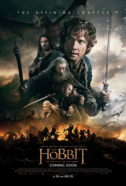

The Hobbit: An Unexpected Journey

Approaching his 111th birthday, the Hobbit Bilbo Baggins begins writing the story of his adventure 60 years earlier for his nephew, Frodo. Long before Bilbo's involvement, the Dwarf king Thrór brought an era of prosperity for his kin under the Lonely Mountain until the arrival of the dragon Smaug. Smaug destroyed the nearby town of Dale, drove the Dwarves out of their mountain and took their hoard of gold. Thrór's grandson, Thorin, sees King Thranduil and his Wood-elves on a nearby hillside, and is dismayed when they leave rather than aid his people, resulting in Thorin's everlasting hatred of Elves.
The Hobbit: The Desolation of Smaug

Thorin Oakenshield and his company are being pursued by Azog and his Orc party. They are ushered by Gandalf to the nearby home of Beorn, a skin-changer who can take the form of a bear. That night, Azog is summoned to Dol Guldur by the Necromancer, who commands him to marshal his forces for war. Azog delegates the hunt for Thorin to his son Bolg. Beorn escorts the company to the borders of Mirkwood, where Gandalf discovers Black Speech imprinted on an old ruin. This, and a prior request by Galadriel, prompt him to investigate the tombs of the Nazgûl. He warns the company to remain on the path before leaving. Upon entering the forest, they lose their way and are ensnared by giant spiders. Bilbo frees the dwarves with the help of the invisibility ring. However, Bilbo begins to understand its dark influence after he drops the ring and brutally kills a spider to retrieve it.
The Hobbit: The Battle of the Five Armies
Bilbo and the Dwarves watch from the Lonely Mountain as the dragon Smaug sets Laketown ablaze. Bard breaks out of prison and kills Smaug with the black arrow. Smaug's falling body crushes the Master of Laketown and his cronies, who were escaping on a boat with the town's gold. Bard becomes the new leader of Laketown and guides its people to seek refuge in the ruins of Dale. Thorin, now possessing the vast treasure in the mountain, searches obsessively for the Arkenstone, which Bilbo had previously found but kept hidden. Upon hearing that Laketown survivors have fled to Dale, he orders the entrance of the Lonely Mountain sealed off.